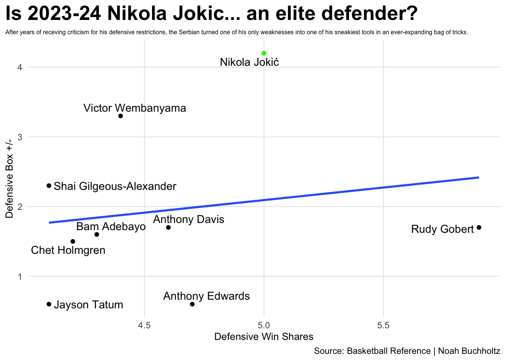

Is Nikola Jokic in line to win his third MVP award in four years?
basketball
awards
Jokic
Author
Noah Buchholtz
Published
April 14, 2024
In one of the tightest Most Valuable Player races we’ve seen over the last decade, all the signs point to the Joker cementing himself amongst the all-time greats.
The 2023-24 NBA season has been a wild rollercoaster that no fan seems to want to get off. A stacked Western conference with 10 (!) teams that are currently above .500, an extremely competitive Eastern conference where seeds 2-8 will not be decided until they final day of the regular season on April 14, and the aforementioned divisive MVP race. There have been so many ups and downs for each team and individual player, but now there’s no time for excuses. Now that we’re here, as the curtain closes on the season, many pundits, journalists, analysts, former players, etc. will all ask the same, all-important question:
Who is the 2023-24 MVP?
This blog will show you why you shouldn’t be shocked when Nikola Jokic begrugdingly earns his third MVP award in the last four seasons and becomes the ninth player ever to win three times. If chosen, Jokic will join quite an elite list: Kareem Abdul-Jabbar (6), Bill Russell (5), Michael Jordan (5), LeBron James (4), Wilt Chamberlain (4), Moses Malone (3), Larry Bird (3), and Magic Johnson (3).
When we look at someone as the MVP of a season, what criteria are we looking for them to meet? The answer to that question will vary from person to person as this is an award that can take on many factors pertaining to the players’ respective “value,” but we can use advanced statistics to make our best assumptions from the data we’ve been provided.
If we’re strictly looking at the numbers, one of the advanced stats that gives us a good baseline for where to look for this award is Player Efficiency Rating (PER). Here are the top 10 from 2023-24.
Code
library(tidyverse)nbaadvanced <-read_csv("nbaadvanced_updated.csv")tenwinsharesandpositiveBPM <- nbaadvanced |>filter(BPM >0) |>filter (WS >=10)jokic <- nbaadvanced |>filter(Player =="Nikola Jokić")ggplot() +geom_bar(data=tenwinsharesandpositiveBPM, aes(x=reorder(Player, PER), weight=PER), fill="lightgrey") +geom_bar(data=jokic, aes(x=reorder(Player, PER), weight=PER), fill="green") +coord_flip() +labs(x="Player Name", y="Player Efficiency Rating (PER)", title="The MVP race has been extremely tight this year, but can anyone catch the Joker?", subtitle="Every NBA MVP since 2015-16 has either led the league in PER, or posted a PER over 30.0. This year, there's only one man who has maintained both...", caption=" Source: Basketball Reference | Noah Buchholtz" ) +theme_minimal() +theme(plot.title =element_text(size =13, face ="bold"),axis.title =element_text(size =9), plot.subtitle =element_text(size=7), panel.grid.minor =element_blank(),plot.title.position ="plot" )
This excludes some players who missed majority of the season due to injury, like reigning MVP Joel Embiid who posted a 34.1 PER, but only played 39 games.
PER does a solid job of summarizing a players entire entire game into one simple number, but doesn’t do a fantastic job of highlighting the defensive performance of a player. In years past, Jokic has been given some relatively justified criticism for his play on the defensive side of the floor, but if you haven’t watched some games or taken a peak at the numbers, the “Joker” completely flipped the script this year.
Code
bestdefenders <- nbaadvanced |>filter(DWS >4) |>filter(DBPM >0)ggplot() +geom_point(data=bestdefenders, aes(x=DWS, y=DBPM),color="black") +geom_point(data=jokic, aes(x=DWS, y=DBPM),color="green") +geom_smooth(data=bestdefenders, aes(x=DWS, y=DBPM), method="lm", se=FALSE) + ggrepel::geom_text_repel(data=bestdefenders, aes(x=DWS, y=DBPM, label=Player)) +labs(x="Defensive Win Shares", y="Defensive Box +/-", title="Is 2023-24 Nikola Jokic... an elite defender?", subtitle="After years of receving criticism for his defensive restrictions, the Serbian turned one of his only weaknesses into one of his sneakiest tools in an ever-expanding bag of tricks.", caption="Source: Basketball Reference | Noah Buchholtz" ) +theme_minimal() +theme(plot.title =element_text(size =20, face ="bold"),axis.title =element_text(size =10), plot.subtitle =element_text(size=6), panel.grid.minor =element_blank(),plot.title.position ="plot" )

As you can see, the reigning Finals MVP leads the league in defensive box plus minus and ranks behind only Rudy Gobert — who is likely to be named Defensive Player of the Year for the fourth time in his career — in defensive win shares. Both of these stats aren’t complete indicators of individual defensive skill, however, they do convey to the readers how much of an impact these players make to their team on that side of the ball as a whole. Blocks and steals are awesome, but they don’t grasp the full magnitude of what defense entails.
So according to the stats this season, Jokic has been the most efficient player in the entire league, while also being one of the most impactful defenders. To fully grasp his influence, this chart shows his overall win shares and box plus/minus, with the size of the dot scaled by the players value over a(n) (average) replacement player, otherwise known as VORP (NBA version of WAR). To break it down a little further, VORP calculates a box-score estimate of the points per 100 team possessions that a player scores over a replacement level player, translated to the average team over a full season.
Code
ggplot() +geom_point(data=nbaadvanced, aes(x=WS, y=BPM, size=VORP), color="grey", alpha=.5) +geom_point(data=jokic, aes(x=WS, y=BPM, size=VORP), color="green") +geom_vline(xintercept =0) +geom_hline(yintercept =0) + ggrepel::geom_text_repel(data=tenwinsharesandpositiveBPM, aes(x=WS, y=BPM, label=Player) ) +labs(x="Win Shares", y="Estimated total box +/-", title="The 2023-24 MVP race has felt extremely close, but is it really?", subtitle="Nikola Jokic, the advanced stat darling, has done it once again.", caption="Source: Basketball Reference | By Noah Buchholtz" ) +theme_minimal() +theme(plot.title =element_text(size =15, face ="bold"),axis.title =element_text(size =10), plot.subtitle =element_text(size=10), panel.grid.minor =element_blank(),plot.title.position ="plot" )
Jokic’s VORP this year finis hed at 10.53, the highest of his career and the highest in the NBA. For those that do not know, Jokic posted a 9.81 in 2021-22, which at the time, ranked as the 14th-best seasonal VORP since they started recording it as an official stat in the 1973-74 season. His number from this year will now rank as the 8th best of all-time, moving his 2021-22 digit down to 15.
If Jokic does snag his third MVP, where does he rank all-time? What about on the all-time centers list? I’m not going to make your decision for you, but out of everyone on the list he’s about to join, he cares about his ranking the least.